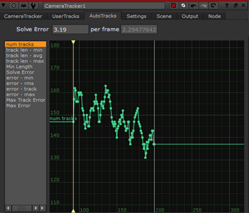
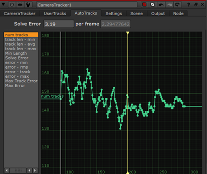

CameraTracker 允许您通过添加新的帧来扩展现有的跟踪数据集，例如当更多的帧可用于拍摄时。
注意: 在解决之前，您可以随时更新跟踪数据，但是一旦解决了相机位置，更新跟踪数据应该只用于添加相对较少的帧。请参阅 使用扩展跟踪数据更新解决方案 欲了解更多信息。
向跟踪数据添加新帧:
| 1。 | 将新框架读入 核武器 使用读取节点的 帧范围 控制。 |
| 2. | 打开 CameraTracker 属性面板，然后单击 更新跟踪 . |
将显示一个对话框，允许您设置要更新的帧范围。
| 3. | 设置所需的帧范围并单击 好 . |
CameraTracker 跟踪指定的范围，并将跟踪数据与现有轨迹相结合。
例如，如果你的原始 自动跟踪 > Num 轨道 曲线出现在左边，右边的图像代表更新完成后的新跟踪数据。
|
 |
 |
| 原始帧范围跟踪数据。 | 更新轨道，包括扩展帧范围。 |
提示: 如果范围之间的过渡似乎很突然，您可以使用中描述的方法重新跟踪连接周围的帧 重新跟踪部分帧范围 .
| 4. | 继续到 解决相机位置 . |
|
|